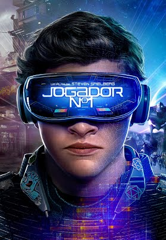

!DOCTYPE html>
Essa parte do nosso catálogo é feito para as pessoas que curtem histórias mais ficticias, e cheias de lendas e tecnologias

Num futuro distópico, em 2044, Wade Watts (Tye Sheridan), como o resto da humanidade, prefere a realidade virtual do jogo OASIS ao mundo real. Quando o criador do jogo, o excêntrico James Halliday (Mark Rylance) morre, os jogadores devem descobrir a chave de um quebra-cabeça diabólico para conquistar sua fortuna inestimável. Para vencer, porém, Watts terá de abandonar a existência virtual e ceder a uma vida de amor e realidade da qual sempre tentou fugir.
Duração: 2 horas e 20min
Classificação indicativa: 12 anos
Após ver a Terra consumindo boa parte de suas reservas naturais, um grupo de astronautas recebe a missão de verificar possíveis planetas para receberem a população mundial, possibilitando a continuação da espécie. Cooper (Matthew McConaughey) é chamado para liderar o grupo e aceita a missão sabendo que pode nunca mais ver os filhos. Ao lado de Brand (Anne Hathaway), Jenkins (Marlon Sanders) e Doyle (Wes Bentley), ele seguirá em busca de uma nova casa. Com o passar dos anos, sua filha Murph (Mackenzie Foy e Jessica Chastain) investirá numa própria jornada para também tentar salvar a população do planeta.
Duração: 2 horas e 49min
Classificação indicativa: 10 anos